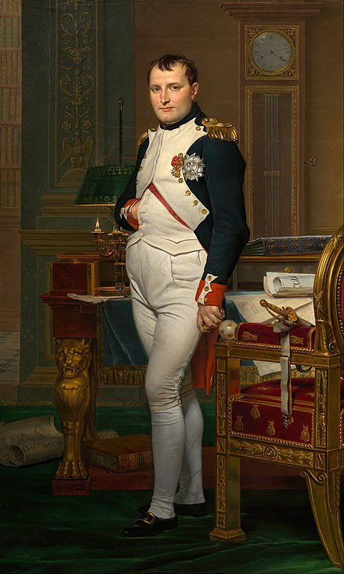

France flag:

France, officially the French Republic (French: République française), is a transcontinental country spanning Western Europe and overseas regions and territories in South America and the Atlantic, Pacific and Indian Oceans. Including all of its territories, France has twelve time zones, the most of any country. Its metropolitan area extends from the Rhine to the Atlantic Ocean and from the Mediterranean Sea to the English Channel and the North Sea; overseas territories include French Guiana in South America, Saint Pierre and Miquelon in the North Atlantic, the French West Indies, and several islands in Oceania and the Indian Ocean.
The provinces of France were roughly equivalent to the historic counties of England. They came into their final form over the course of many hundreds of years, as many dozens of semi-independent fiefs and former independent countries came to be incorporated into the French royal domain. Because of the manner in which the provinces evolved, each had its own sets of feudal traditions, laws, taxation systems and courts; the system represented an impediment to effective administration of the entire country from Paris. During the early years of the French Revolution, in an attempt to centralise the administration of the whole country and to remove the influence of the French nobility over the country, the entirety of the province system was abolished and replaced by the system of departments in use today.
A great number of words of French origin have entered the Persian language since the early modern period. The following is a partial list of these loanwords:
| French | Persian (Persian alphabet) |
Persian (Perso-Latin alphabet) |
|---|---|---|
| abat-jour | آباژور | ābāžor |
| acide | اسید | asid |
| crochet | کروشه | kroše |
| gendarmerie | ژاندارمرى | žāndārmeri |
| rendez-vous | رانده وو | rānde vu |
| rimmel | ریمل | rimel |
| robe de chambre | رب دوشامبر | rob do šāmbr |
| impérialisme | امپرياليسم | amperyālism |
| Méditerranée | مديترانه | Mediterāne |
| xerox | زیراکس | zirāks |
At the end of the Antiquity period, ancient Gaul was divided into several Germanic kingdoms and a remaining Gallo-Roman territory, known as the Kingdom of Syagrius. Simultaneously, Celtic Britons, fleeing the Anglo-Saxon settlement of Britain, settled the western part of Armorica. As a result, the Armorican peninsula was renamed Brittany, Celtic culture was revived and independent petty kingdoms arose in this region.

The first leader to make himself king of all the Franks was Clovis I, who began his reign in 481, routing the last forces of the Roman governors of the province in 486. Clovis claimed that he would be baptized a Christian in the event of his victory against the Visigoths, which was said to have guaranteed the battle. Clovis regained the southwest from the Visigoths, was baptized in 508, and made himself master of what is now western Germany. Clovis I was the first Germanic conqueror after the fall of the Roman Empire to convert to Catholic Christianity, rather than Arianism; thus France was given the title "Eldest daughter of the Church" (French: La fille aînée de l'Église) by the papacy,[46] and French kings would be called "the Most Christian Kings of France" (Rex Christianissimus).

Facing financial troubles, King Louis XVI summoned the Estates-General (gathering the three Estates of the realm) in May 1789 to propose solutions to his government. As it came to an impasse, the representatives of the Third Estate formed into a National Assembly, signalling the outbreak of the French Revolution. Fearing that the king would suppress the newly created National Assembly, insurgents stormed the Bastille on 14 July 1789, a date which would become France's National Day.

In early August 1789, the National Constituent Assembly abolished the privileges of the nobility such as personal serfdom and exclusive hunting rights. Through the Declaration of the Rights of Man and of the Citizen (27 August 1789) France established fundamental rights for men. The Declaration affirms "the natural and imprescriptible rights of man" to "liberty, property, security and resistance to oppression". Freedom of speech and press were declared, and arbitrary arrests were outlawed. It called for the destruction of aristocratic privileges and proclaimed freedom and equal rights for all men, as well as access to public office based on talent rather than birth. In November 1789, the Assembly decided to nationalise and sell all property of the Catholic Church which had been the largest landowner in the country. In July 1790, a Civil Constitution of the Clergy reorganized the French Catholic Church, cancelling the authority of the Church to levy taxes, et cetera. This fueled much discontent in parts of France, which would contribute to the civil war breaking out some years later. While King Louis XVI still enjoyed popularity among the population, his disastrous flight to Varennes (June 1791) seemed to justify rumours he had tied his hopes of political salvation to the prospects of foreign invasion. His credibility was so deeply undermined that the abolition of the monarchy and establishment of a republic became an increasing possibility.
Napoleon Bonaparte seized control of the Republic in 1799 becoming First Consul and later Emperor of the French Empire (1804–1814; 1815). As a continuation of the wars sparked by the European monarchies against the French Republic, changing sets of European Coalitions declared wars on Napoleon's Empire. His armies conquered most of continental Europe with swift victories such as the battles of Jena-Auerstadt or Austerlitz. Members of the Bonaparte family were appointed as monarchs in some of the newly established kingdoms.
These victories led to the worldwide expansion of French revolutionary ideals and reforms, such as the metric system, the Napoleonic Code and the Declaration of the Rights of Man. In June 1812, Napoleon attacked Russia, reaching Moscow. Thereafter his army disintegrated through supply problems, disease, Russian attacks, and finally winter. After the catastrophic Russian campaign, and the ensuing uprising of European monarchies against his rule, Napoleon was defeated and the Bourbon monarchy restored. About a million Frenchmen died during the Napoleonic Wars.After his brief return from exile, Napoleon was finally defeated in 1815 at the Battle of Waterloo, the monarchy was re-established (1815–1830), with new constitutional limitations.
wikipedia: France
wikipedia: Provinces of France
wikipedia: List of French loanwords in Persian